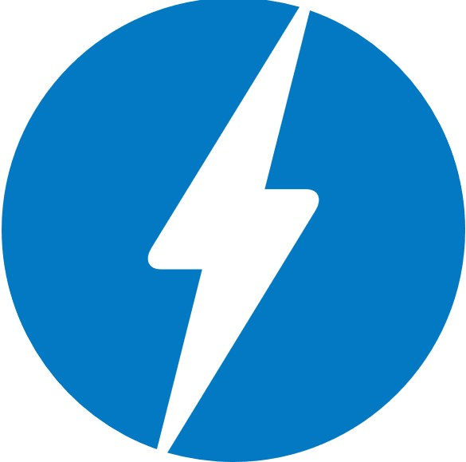

Meet
architects
@

Pick your favourite
-
 React v16
released
yesterday!
#
React v16
released
yesterday!
#
-
 Polymer
&
Web components
Polymer
&
Web components
 #
#
-

Accelerated Mobile Pages
#
-
Progressive Web Apps
#
-
Universal JS vs. progressive
#
-
GraphQL
#
-
Media relevant topics
#
New stuff
-
New render return types:
fragments
and
strings
-
Error boundaries
-
Portals
-
Server-side rendering done right
-
Custom DOM attributes
-
Reduced library size (30% savings)
Next
Async
rendering
Polymer project
- Great initial project scaffolding
- #UseThePlatform - see twitter
- Polymer 1.0, 2.0, 3.0? Whaaaat?
- Enterprise ready?
- Should be supported by other framework like Angular/React/Vue/Aurelia?
AMP upsides
- Execute all AMP JavaScript asynchronously
- Size all resources statically
- Don’t let extension mechanisms block rendering
- Keep all third-party JavaScript out of the critical path
- All CSS must be inline and size-bound
- Minimize style recalculations
- Only run GPU-accelerated animations
- Prioritize resource loading
- Load pages in an instant
AMP upsides
- Reduced page load time
- Google mobile index ranking
- Less load on servers
-
The Guardian released their AMP page
last year
You can still view pages in AMP:
original
and
amp
AMP downsides
- Amazing speed achieved thanks to Google cache
- JavaScript required
- Separate page required
- Content differences (AMP vs RWD)
- Stripped analytics
- AMP pages do not guarantee Google scoring boost
Progressive
Web
Applications
-
Service Workers
- Push Notifications
- Caching
- Content strategies
-
Native experience
- Fast!
- Add to home screen
- standalone display
- Responsive
- Application Shell
- PRPL pattern
Universal JS
vs.
progressive
SSR vs. progressive
- SPA vs SEO - Google executes JS! (but ...)
- Best perceived performance
- Uncanny valley
- Problems of SSR for Universal JS (misuse of React.renderToString())
GraphQL
- Conceptual similarities to HATEOAS (generic REST interface)
- Data query language
- Strongly typed
- Introspective
- Hierarchical
GraphQL
- Not a storage model
- Not a DB query language
- An application layer
- A specification that determines the validity of the schema on the API server. The schema determines the validity of client calls.
- Learn more
- Example from github
Media relevant topics
- Caching e.g. active, inactive, CDNs
- SEO - top factors, mobile index, no page score test
- Internationalization - RTL, page looks, topics
- Tracking